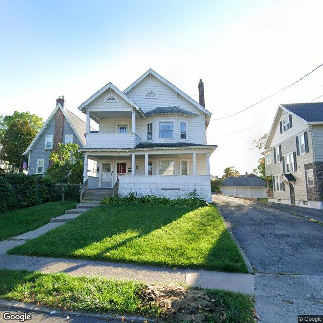

Property entry
227 Ross Pk
Published 2026-10-09T09:06:44+00:00
Parcel key: 005-02-170

City records
Matches use parcel IDs, normalized addresses, or nearby coordinates. Confirm a match against the source record before relying on it. Publication dates are not source-data dates.
Vacant properties 0
No matches stored for this feed. The feed or address matching may be incomplete; this is not confirmation that no records exist.
Rental registry 0
No matches stored for this feed. The feed or address matching may be incomplete; this is not confirmation that no records exist.
Code violations 0
No matches stored for this feed. The feed or address matching may be incomplete; this is not confirmation that no records exist.
Unfit properties 0
No matches stored for this feed. The feed or address matching may be incomplete; this is not confirmation that no records exist.
AI image observations (unverified)
These observations are generated from an image, not an inspection or an official code finding. No human verification is recorded here.
Image capture date: Not recorded. The entry publication date does not establish the age of the image.
Automated image description
{"summary": "This image depicts a two-story residential house with a white exterior on a suburban street. The property appears to be well-maintained with a neatly trimmed lawn, a paved driveway, and a small front yard with a few shrubs.", "property_type_guess": "single-family residence", "visible_conditions": ["front yard is well-maintained", "driveway is clean and paved", "house exterior is in good condition"], "condition_scores": {"roof": "good", "siding_or_facade": "good", "windows_doors": "good", "porch_or_entry": "good", "yard_or_lot": "good", "trash_debris": "none_visible", "vegetation_overgrowth": "none_visible"}, "visible_flags": {"boarded_windows_or_doors": "no", "fire_damage_visible": "no", "structural_damage_visible": "no", "vacancy_signs_visible": "no", "active_construction_visible": "no"}, "possible_unrecorded_issues": ["The image appears to be a clear, well-lit photograph taken during the day, which suggests that there may be no unrecorded issues visible in the current state of the property. However, it is important to note that image quality, angle, and the view itself can sometimes hide potential issues that might not be visible from this perspective."], "image_annotations": [{"label": "Front yard is well-maintained", "reason": "The grass is neatly trimmed and the shrubs are well-pruned.", "bbox": {"x": 0.515, "y": 0.345, "width": 0.803, "height": 0.683}, "confidence": "high"}, {"label": "Driveway is clean and paved", "reason": "The driveway is clear of debris and has been recently paved.", "bbox": {"x": 0.515, "y": 0.345, "width": 0.803, "height": 0.683}, "confidence": "high"}, {"label": "House exterior is in good condition", "reason": "There are no visible signs of damage, wear, or neglect. The siding is clean, the windows are clear, and there are no indications of disrepair.", "bbox": {"x": 0.121, "y": 0.333, "width": 0.769, "height": 0.859}, "confidence": "high"}], "needs_human_review": "false", "confidence": "high", "caveats": ["It is important to note that while the image seems clear, it is still possible that certain aspects of the property might not be visible from this perspective, such as the back yard, the roof, or any potential issues inside the house."
Property type guess: unclear
Visible conditions
- No items reported.
Condition scores
No structured condition scores available.
Visible flags
No structured visible flags available.
Possible image-only flags
- No items reported.
AI review boxes
- No items reported.
Review reasons
- No items reported.
Image quality
- Available
- True
- Bytes
- 80446
- Needs Rerun
- False
ACS tract context
Census Tract 4; Onondaga County; New York
- Total population
- 4042
- Median household income
- 66250
- Poverty rate
- 27.6
- Housing units
- 1534
- Vacancy rate
- 4.6
- Renter-occupied share
- 71.7
- Median gross rent
- 130600
OpenStreetMap nearby
meter search radius
OpenStreetMap lookup failed: HTTP Error 406: Not Acceptable